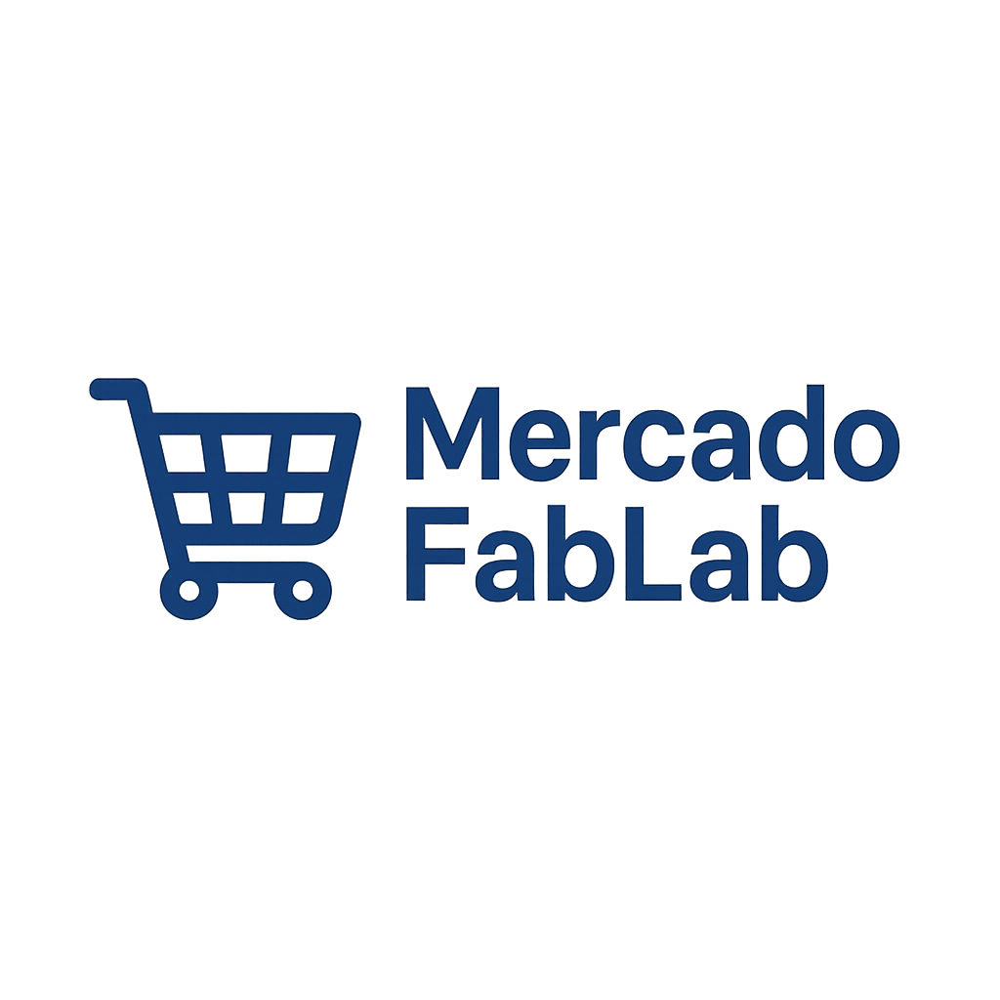
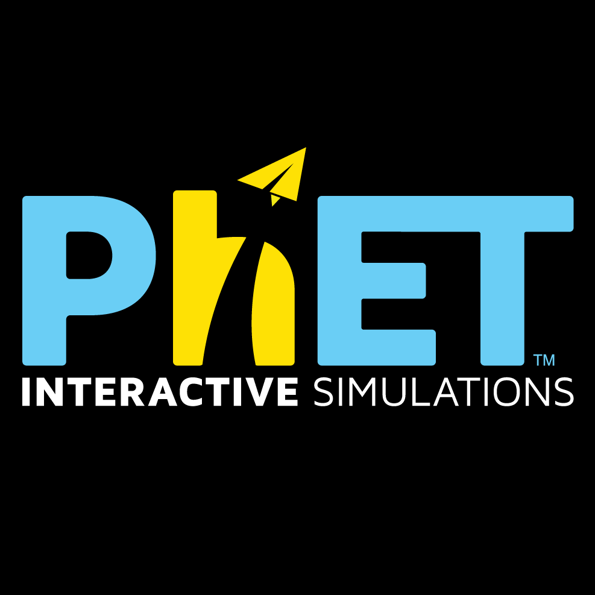
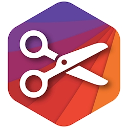
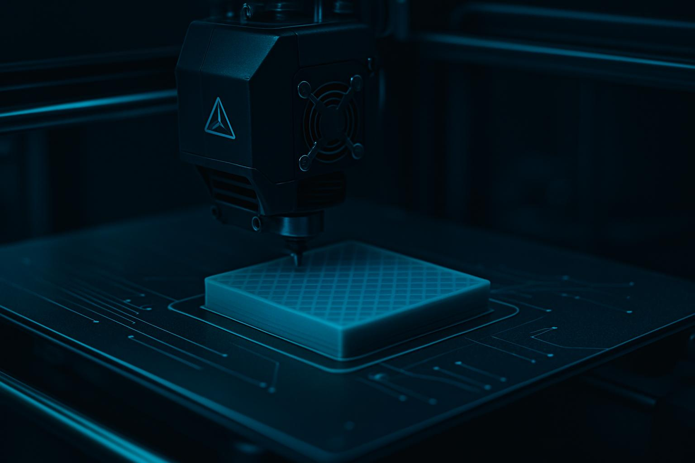
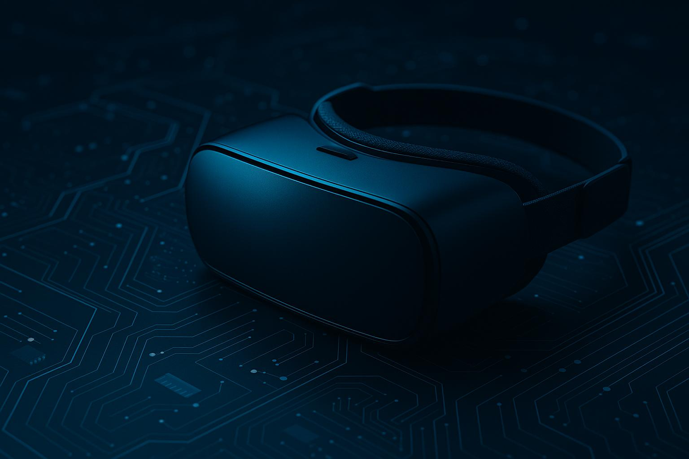

Os notebooks do laboratório são a base para pesquisas, produções e simulações.
Entre as principais vantagens estão:
- Acesso a softwares e sites educacionais
- Possibilidade de trabalho em duplas e projetos colaborativos
Por outro lado, é importante considerar que:
- É essencial planejar o tempo de uso e organizar arquivos em pastas compartilhadas.
Os notebooks devem ser utilizados com objetivos pedagógicos claros. O OED ou TLD/Maker pode apoiar na instalação de softwares, no acesso à internet segura e na organização de contas/alunos. Recomenda-se preparar previamente os links, roteiros de pesquisa e modelos de documentos para os estudantes.

Simulador de compras para atividades gamificadas e educação financeira. Produzido no SESI 413 para uso em projetos pedagógicos da unidade. Ideal para trabalho em grupo, tomada de decisão e resolução de problemas.

Simuladores interativos de Ciências e Matemática. Útil para experimentos virtuais, exploração guiada e reforço conceitual com visualizações dinâmicas.

Gera moldes paramétricos (caixas, cones, envelopes) para impressão e montagem. Excelente para integrar Matemática, Arte e Design – e combinar com a plotter ou a tesoura.
Relatório investigativo

Modelagem + documentação

Simulações PhET